Nekros Skin Set
Creator
Name: ねくろす Nekros
Twitter:
@N_C_R_S_
Blog:
ねくろすのAndroid日記
Mod Information
ID: 3d.tank_skin.nekros
Description: Tank skin set of Anime/Manga which Nekros created. He updates this mod each time he makes new skin.
Sample Image
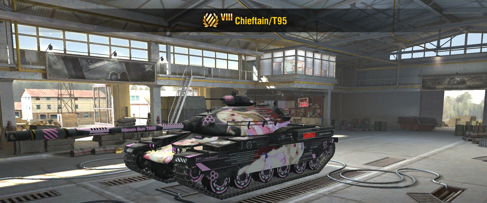 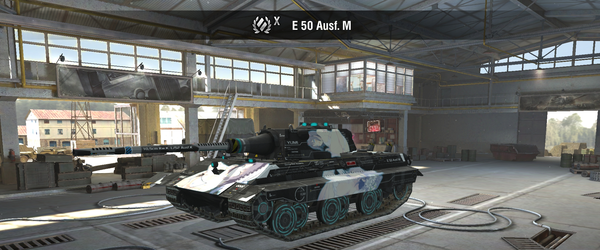 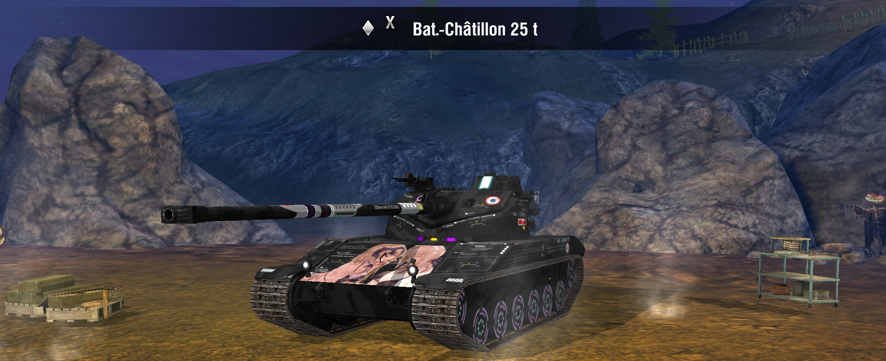 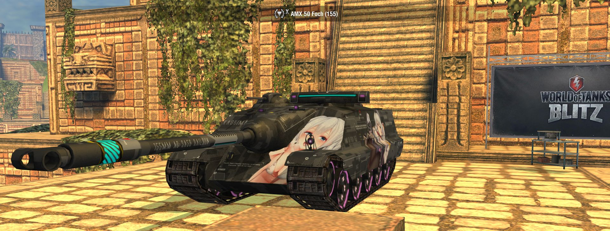 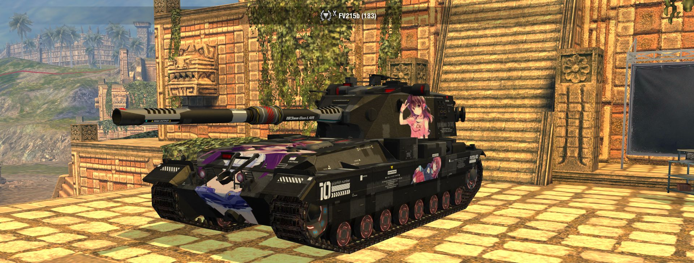 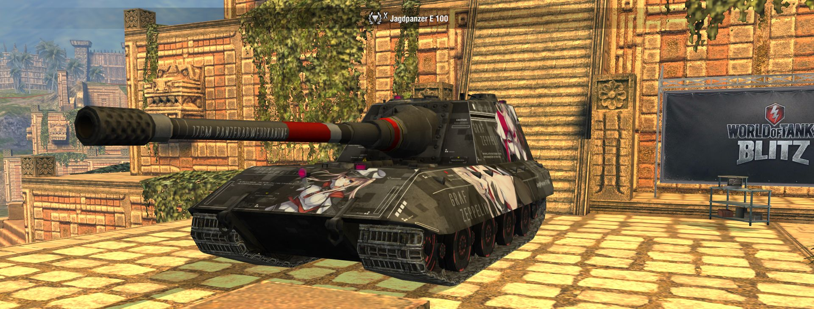
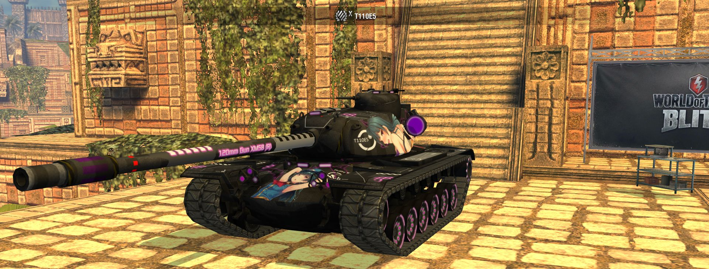
 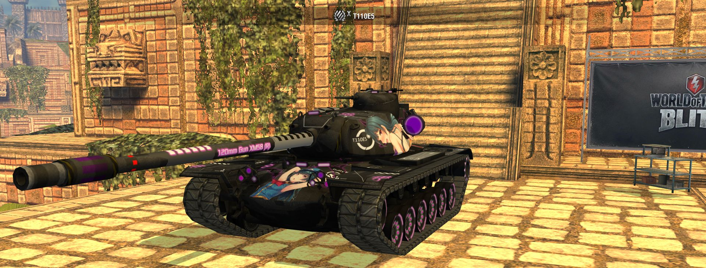
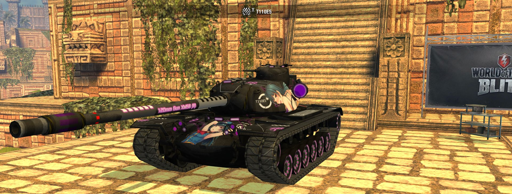
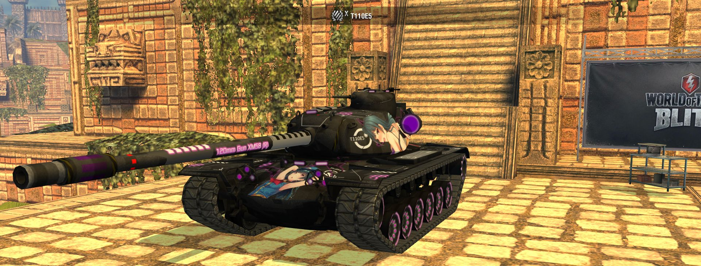
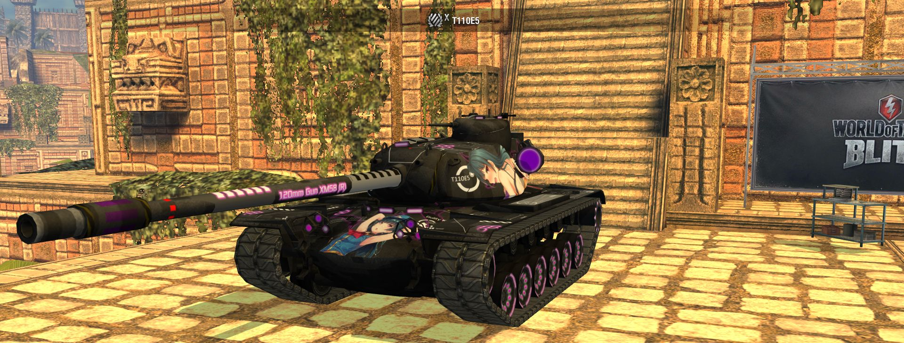